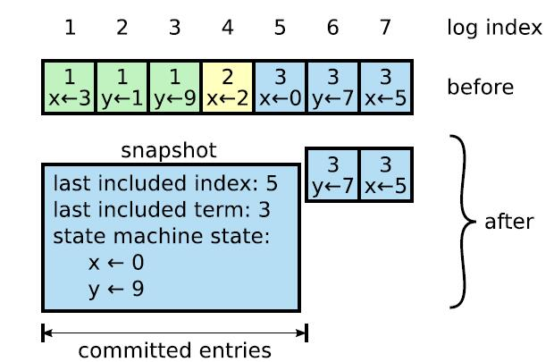

对于 Raft，官网的说法是这样的：
Raft 是一个易于理解的共识算法。在容错性和性能方面，它相当于 Paxos。不同之处在于，它被分解成相对独立的子问题，并且清楚地解决了实际系统所需的所有主要部分。我们希望 Raft 将向更广泛的受众提供共识，并希望这些更广泛的受众将能够开发出比现在更高质量的基于共识的系统。
之前参加了 pingcap 组织的训练营，lab2 也是 raft，但由于零基础，很快就被干碎了。故本次前来尝试教学级别的 raft code，希望6.824 善待我。
PART A-Raft Leader Election
关于 Raft，有一个非常通俗易懂的Raft 可视化网站，以及描述 Raft 算法的论文。我只能说这个算法很复杂，很有挑战性。
part A 是 code 出 Raft 节点在启动后，超过一定时间间隔自动发起选举并当上领导者的过程。我把这一过程描述为以下步骤：
节点自身包含一个定时器，自动增长，在 timeout 时间间隔内满足以下条件
- 未投票给其它节点
- 未收到当前 leader 的RPC
- 未发起选举
则将自身状态变为 Candidate，CurrentTerm 加一，并请求其它各个节点（下称 Peers）给自己投票
Peers 收到 requestVote 消息后，对该消息进行处理，并按照一定规则判断是否能够同意其成为 leader
如果 Candidate 收到了超过半数的赞成票（自己也算一票），则成为当前 Term 的 leader
至此，一个完整的选举过程就结束了。另外，节点成为 leader 后，需要定期向其它 Peers 发送不带任何 log 的特殊 AppendEntriesRPC，也就是所谓的 HeartBeat。
这一部分并不难，只需修改 Raft.go 即可，而解决它的关键在于 paper 中的 Figure2，为本实验提供了非常有用的结构体定义以及规则。同时，goroutines 也为我们解决某些问题提供了很重要的一个手段。
结构体定义
1 | // 每个日志条目存相应的索引、term 以及操作 |
Timer
尽管 6.824 提了一嘴不要用 go time 库里的 timer，但感觉应该是怕学生不会用用错(
根据算法要求，需要选举定时器和心跳定时器各一个，每个定时器到点了都要触发一次事件，并且根据节点的 raftState 不同，进行不同的重置定时器操作。
由于 lab 要求 1s 内最多发十次心跳，所以 HeartBeatTimeOut 设置为 100ms
1 | func (rf *Raft) ResetTimer(isleader bool) { |
Candidate 发送投票请求
关键点在于如何应对过期的 reply。这里在每次收到 reply 时，都对整个节点上读写锁，获取当前状态是否为 Candidate 并检查 reply 的 term 是否与节点当前 term 一致。一旦有一个条件不满足，则认为该消息已过时。
由于每个 goroutine 在对 reply 的处理是互斥的，所以这是判断消息是否过期的最有效的办法。
若 Candidate 成功当选（破坏条件1）或收到了一个更高 term 节点的回复而更新自己的状态（破坏条件1, 2），说明这次选举已经可以结束了，再进行下去没有意义了，后续收到所有的该次选举产生的 reply 都作废。
1 | func (rf *Raft) StartElection() { |
对投票请求进行回复
因为 2A 部分没有 AppendEntries，所以暂时不用考虑 paper 中各种和 Log 有关的变量。
这里给 reply 加了个变量 Err，为了在打 log 的时候能够知道是因为什么而拒绝了该次投票，从而更快定位 bug。
1 | func (rf *Raft) RequestVote(args *RequestVoteArgs, reply *RequestVoteReply) { |
成为 leader
当选后需立即广播一次 HeartBeat，以巩固地位。
否则，考虑这种情况：A 和 B 同时发起投票，C 因为先收到 B 的请求而给 B 投了赞成票，之后收到 A 的请求，因为已经投了票故没有投给 A，也就没有更新选举定时器。最后 A 当选了，如果不马上广播 HeartBeat 而是等心跳定时器超时，则有可能在这段时间内 C 触发了选举超时，进行新的一轮选举。而事实上我们并不需要这一次多余的选举。
尽量避免不必要的流程。
1 | func (rf *Raft) StartHeartbeat() { |
2A 中，SendHeartBeat()不需要发送多余的信息，只要告诉其它节点“我”的当前 term 即可。其它节点收到 rpc 后，根据收到的 term 进行相应操作。
PART B-Log Replication
这一 part 要求我们实现 Log 的发送、接受与提交，选举约束与快速恢复。
AppendEntry
上层通过调用 Start() 函数向 Leader 发送一个 command，我们需要将这一 command 以日志的形式记录下来，并告知其他 raft node。按照实验要求，我们需要立刻返回这一 command 在日志中的索引与相应 term，同时如果上层调用的结点是 Leader ，则返回 true。
Leader 结点还是会每隔一定时间发送 Heartbeat，但此时在每个心跳期间，我们可能是有日志要发送的。通过阅读论文发现，有这样一个变量：
- nextIndex[]：for each server, index of the next log entry to send to that server (initialized to leader last log index + 1)
所以我们对当前是发 HB 是否要捎带日志，只需要判断 next[server] 是否 ≤ LastLogIndex 即可，且要求：
- If last log index ≥ nextIndex for a follower: send AppendEntries RPC with log entries starting at nextIndex。
上面是发送侧，下面说接收侧。
paper 中提到了以下规则：
- Reply false if term < currentTerm (§5.1)
- Reply false if log doesn’t contain an entry at prevLogIndex whose term matches prevLogTerm (§5.3)
- If an existing entry conflicts with a new one (same index but different terms), delete the existing entry and all that follow it (§5.3)
- Append any new entries not already in the log
- If leaderCommit > commitIndex, set commitIndex = min(leaderCommit, index of last new entry)
逐个 adapt 到代码里即可。
另外，paper 中还提到了：
- If there exists an N such that N > commitIndex, a majority of matchIndex[i] ≥ N, and log[N].term == currentTerm: set commitIndex = N (§5.3, §5.4).
这条规则就是让我们更新 commitIndex 用的。在每次处理 AE 的 reply 时，都对当前其它 peers 的 matchIndex 进行遍历，找到第二大的 matchIndex 即可，该值必然满足 a majority of matchIndex[i] ≥ N。
1 | func (rf *Raft) FindN() { |
这里有一个我一开始没搞清楚的坑在于：每次更新 Applied 不能用 Goroutine，否则会报 "out of order xxx" 的错，也就是未按序 apply。
选举约束
这其实很好理解，Follwer 只 Grant 最后一个日志比它更 up-to-date 的 VoteRequest，也就是说要满足以下两点：
- Candidate.LastLogTerm > Follwer.LastLogTerm
- if Candidate.LastLogTerm == Follwer.LastLogTerm, Candidate.len(Entry) > Follwer.len(Entry)
如果不满足，就拒绝。
需要加上这样一个条件：
1 | // 自己有的 LogEntry 条目更 up-to-date |
快速恢复
Guide 上面讲的还挺清楚的，conflictIndex 是发生冲突时 Follwer 日志里的 Index，conflictTerm 就是那个索引下对应日志的 Term。
接受侧：
- If a follower does not have prevLogIndex in its log, it should return with conflictIndex = len(log) and conflictTerm = None.
- If a follower does have prevLogIndex in its log, but the term does not match, it should return conflictTerm = log[prevLogIndex].Term, and then search its log for the first index whose entry has term equal to conflictTerm.
发送侧：
- Upon receiving a conflict response, the leader should first search its log for conflictTerm. If it finds an entry in its log with that term, it should set nextIndex to be the one beyond the index of the last entry in that term in its log.
- If it does not find an entry with that term, it should set nextIndex = conflictIndex.
这样做有助于快速修改 next[]，而不用每次都只是减一。这里我用了 binarysearch 来找对应的 index。
1 | func (rf *Raft) FindNextIndex(ConflictIndex, ConflictTerm int) (next int) { |
其他
- 在生成 raft node 的时候我把一个 index:0 term:0 的日志塞到里面，这样就能让它每一个 index 都能直接对应，而不需要考虑数组从 0 开始，PrevLogTerm 也就不需要考虑 PrevLogIndex 是否大于零了。
- AppendEntryRPC 成功和失败都返回 ConflictIndex 和 ConflictTerm，而 AE 成功时我们就认为 ConflictIndex 是 Follwer 的最后一个索引，HB 成功时则设置为 args.PrevLogIndex（这是参考了 Raft 官网的设定），就能正确更新到 next[server]
PART C-Persistence
这块虽然标了 hard，但实际代码量可以忽略不计。总的来说要我们实现一致性，即能保证节点 crash 后能恢复到原来的状态。
Paper 中已经为我们标出了哪些变量（VoteFor、Term、Entry）是需要保持一致性的，所以 Persist() 和 ReadPersist() 没什么好聊的，直接 uncomment 掉，稍微改改就好了。
我们需要在这三个变量被修改的时候，及时调用 Persist() 函数以保存到 rf.Persist 里。
- VoteFor：这个变量只有在两种情况下会变：
- 收到投票申请，同意投票。 这个直接在 RequestVote 里改就好了。
- 任期改变，重置投票。 收到任一 Term 大于 CurrentTerm 的 Message 都会导致任期改变，同时也会使节点“convert to Follwer（Rules For Servers）”。
- Term：同上。
- Entry：直接在 AppendEntries() 里加。
由于系统的高并发性与网络的不可靠性，我们还需要在合适的位置及时上锁，尽可能保证线性一致（善用 rf.mu）。
以及测试中有两个是 unreliable network ，意味着会丢包，我在 log 的时候发现这会导致选举的赞成票迟迟发不到 candidate 手上（被网络丢弃了），就是出现 Term 不断增加而没有 Leader 出现。于是在 sendRequestVote 里把 Call 改成了循环发送直至返回 true。
不需要在 SendHeartBeat 里应用这一修改，因为心跳的发送是周期性的，很有可能上一个心跳时刻由于没收到 reply 而重复发，发着发着就到下一个心跳时刻了，这是我们不能接受的。
PART D-Log Compaction
由于日志会无限增长，如果不采取某些措施，内存则会被大大浪费。Paper 第七节提出了“日志压缩”这一机制，也就是 Leader 节点定期在 Raft 层调用 Snapshot() 将当前 Application 层的状态以快照的形式保存，并丢弃那些已经被 Applied 的日志——这些日志在之后的时间不会再被用到。如下图所示

原理就如 Paper 中说的那样。 在这一 part 中我们需要做这些事情：
- 改变 Entry 的索引方式
- 实现 Snapshot() 函数
- 实现 InstallSnapshotRPC() 以及相应的 args、reply
- 实现 crash 后恢复所需的持久状态
索引
因为节点的日志里存的 Index 不一定和数组下标一一对应了，前面我将每个 rf.Entry[0] 都设为一个 {Index:0, Term: 0} 的哨兵来防止越界，在这里由于进行了日志压缩，哨兵可以改为 {Index: LastIncludedIndex, Term: LastIncludedTerm}，这样一来日志索引 index 到数组里的位置就变成了 index - rf.Entry[0].Index
⚠ 每个涉及到索引的地方都要进行修改
Snapshot(index int, snapshot []byte)
这里的 index 其实就是 LastIncludedIndex，snapshot 其实就是上层告诉我们的状态，需要保存到 persist 里。 我们对 index 进行一个范围的判断，如果不越界，则进行日志的截断，并进行一个 persist.SaveSnapshot 的操作。
因为 persist.go 里没有单独保存 snapshot 的函数，我就自己加了一个。 （根据观察，测试里好像会隐式对所有节点调用 Snapshot，当然我也不确定、、）
InstallSnapShotRPC
args 和 reply 要的变量都直接在 6.824 lab 网页的 hint 里和 paper 里找就行。 唯一要解决的问题是发送端要怎么处理这个 RPC—— 我的处理方法是，如果某个要发送的 AppendEntries 的 PrevLogIndex 比 Leader 当前存的第一个日志的 Index 还要小，说明这个 peer 已经落后太多，Leader 没有更早的日志能发过去了，那就直接告诉它要采用这个快照，一步到位，然后更新 Leader 里这个 peer 对应的 nextIndex。 那么接收侧如果收到了这一 RPC，先按照 paper 里说的检查一下，无误后自己截断日志，并更新 lastapplied 和 commitindex（snapshot 里没有这一步）
考虑到并发性，我选择让这一 RPC 和 AE RPC 有同等地位——每个心跳时刻只发送其中的一个，否则会出现上一个心跳时刻的 goroutine 和下一个心跳时刻的 goroutine 时间上起冲突
BTW，2D 测试一开始会出现 RAFT GUIDE 里最后提到的“四向死锁”这一糟糕的情况，解决方案是在建立 raft 节点时，开一个新线程让其 Apply 日志，每次 CommitIndex 更新时，都通过 raft 里的某个条件变量唤醒线程，让其工作，然后再次进入 Wait()
1 | func (rf *Raft) Applier() { |